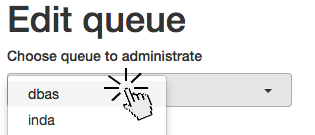
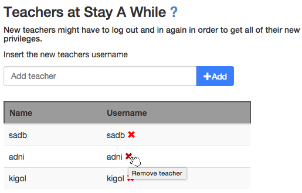

Administrators
Administrators are the supreme rulers of Stay A While, with privileges to perform just about anything. Their primary purpose is adding new queues, and adding teachers for those queues.
Add a server-message
To add a server-message, go to the Administration page. Then click the Add server-message button and enter a message in the window that opens up. A server-message is shown to users upon loggin into Stay A While, and is useful to forewarn users upon updating the service.
Add an administrator
To add an administrator, go to the Administration page. Then enter the name of the user you wish to add as administrat in the field under Administrators and click Add. The user should now show up in the administrat list. If not, please refresh the page. New administrators will get their privileges after they have logged out and in again.
Remove an administrator
To remove an administrator, go to the Administration page. Then, under Administrators, click the red cross beside the name of the administrator you wish to remove. The user should now disappear from the administrator list. If not, please refresh the page. The administrator rights will be removed from the user as soon as the user has logged out from the application.
Note: There must always be at least one administrat. It is therefore not possible to remove an administrator if it's the last one.
Add a teacher or assistant
See Add a teacher or assistant under Teacher.
Accessing statistics
See Statistics under Teacher.
Teacher
Teachers are in charge of specific queues. In addition to the privileges of an assistant, they can also add and remove assistants as well as teachers from their queues and hide the queue itself.
Add a teacher or assistant
To add a teacher or assistant for a queue, first go to the Administration page. Then choose the queue you wish to add a teacher or assistant for in the dropdown as below:
After you have selected a queue, you enter the name of the user you wish to add either in the Teacher or the Assistant input fields, and then press the Add button. When that is done, the user has been added as either a teacher or assistant for that queue. If the list doesn't update automatically, please refresh the page and confirm that the user has been added.
Remove a teacher or assistant
To remove a teacher or assistant from a queue, first go to the Administration page. Then choose the queue you wish to remove a teacher or assistant from in the dropdown as when adding a teacher. Click the red cross beside the user you want to remove, as in the picture below.
The privileges of the user has now been removed. If the list doesn't update automatically, please refresh the page and confirm that the user has been removed.
Hide a queue
Hiding a queue means both clearing and hiding the queue. This can be used for example when there will be no labs in a queue for a longer time.
To hide a queue, first go to the Administration page. Then go into the Select queue dropdown, and click Hide queue. Confirm in the popup that appears.
When you want to open the queue again, go into the same menu and select Wake up queue.
Statistics
Stay A While allows the teacher to access some information about how a queue has been used.
To access the statistics, first go to the Statistics page. Then go into the Select queue dropdown, and select the desired queue. Then enter a starting point and an end point. Once the desired time-period has been entered click, the Get statistics button and the information should be shown below.
Assistants
Queue assistants help with moderating specific queues. In addition to removing specific users, they are also able to lock and clear queues, as well as sending messages and interact with the users in the queue.
Remove a queue position
To remove a queue position, first double-click the user you wish to remove and thereafter click the appering red button with a trashbin.
Note: Be careful when removing users from the queue, those actions can not be reverted.
Lock a queue
When a queue is locked, users can see the queue but not join it. When locking a queue, users already in the queue will not be removed.
To lock a queue, first go to the main page of the queue via the Queues page. Then go into the Options dropdown, and select Lock. Confirm in the popup that appears.
To unlock a queue, do the same as above, but instead of choosing Lock, you choose Unlock.
Purge a queue
When a queue is being purged, all people in the queue will be removed. This can't be reverted.
To purge a queue, first go to that queue's main page via the Queues page. Then go into the Options dropdown, and select Purge. Confirm in the popup that appears.
Users
Queue status
The queues in Stay A While can have different statuses, which can be good to know. The statuses are indicated by the color and style of the queue name.
| Style | Icon | Description |
|---|---|---|
| Active queue | The queue is active and can be joined | |
| Locked queue | The queue is locked and can't be joined |
Find a queue
The first step to queueing would be to find the queue you wish to join, right? So how is that done?
Well, first go to the Queues page. There you can either scroll to find the queue
you are searching for, or you could search for the queue. To scroll, just scroll - more info on
scrolling will not be covered in this help section.
To search for a queue, type the queue name (or parts of the queue name) in the box that looks like this:

Join a queue
To join a queue, you will first need to find the queue (see Find a queue). When you have found the queue, let's say you want to join the queue Allmänhandledning, click the queue name.

You now reach the queue page, where all the queueing takes place. If you are at a KTH computer, your location will be automatically obtained.

If your location is not automatically obtained, please type your location in the location field.
Now click the Join queue button, and you are done!
Note: On the queue list page, the queues you are currently queueing in become blue.
Leave a queue
To leave a queue, you must first join a queue. If you haven't joined the queue you want to leave, we recommend you to not join that queue. If you have already joined the queue you want to leave, go to the main page of the queue and click the Leave queue button.
Guests
You are not logged in. If you only want to view a queue, that's cool, but to be able to join a queue, you will need to log in.
Viewing a queue
If you don't want to log in, you can open up any queue and see the virtual line of eagerly waiting people. This is done by clicking the name of the queue you want to look at in the Queues page.
For example, if you want to look at the queue for Allmänhandledning, you click like this: